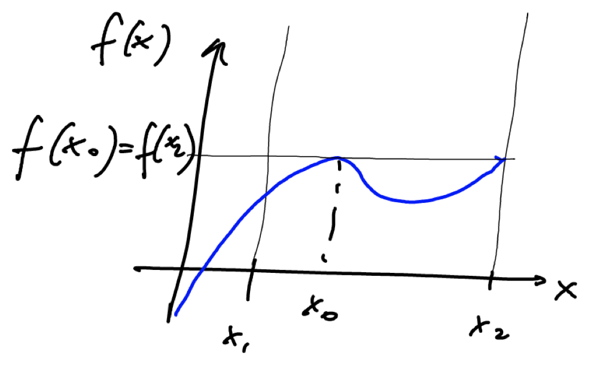

14 Exercises
Gaussian integrals
Write the characteristic function \(\phi(k)\) for the pdf
\[\begin{equation*} p(x)= \begin{cases} \frac{1}{a} &x\in[0,a]\\ 0 &\text{otherwise} \end{cases} a>0 \end{equation*}\]
Then use the moment generating property of \(\phi(k)\) to calculate the mean \(\langle x\rangle\) of the distribution p.
Solution. Let’s calculate the characteristic function as defined (equation (eq:integrali-gaussiani-funzioni-caratteristiche-definizione)):
\[\begin{align*} \phi(k)&=\cancel{\int_{-\infty}^0e^{ikx}\cdot0dx}+\int_0^{a}e^{ikx}\cdot\frac{1}{a}dx+\cancel{\int_a^{+\infty}e^{ikx}\cdot0dx}=\\ &=\frac{1}{iak}e^{ikx}\bigg|_0^a=\frac{1}{iak}\left(e^{iak}-1\right) \end{align*}\]
The mean relative to the distribution \(p\) will be given by
\[\begin{equation*} \langle x\rangle=-i\frac{d\phi}{dk}\bigg|_{k=0} \end{equation*}\]
so let’s first calculate the derivative of \(\phi\):
\[\begin{align*} \frac{d\phi}{dk}&=\frac{d}{dk}\left[\frac{1}{iak}\left(e^{iak}-1\right)\right]=-\frac{1}{iak^2}\left(e^{iak}-1\right)+\frac{1}{iak}\cdot iae^{iak}=\\ &=\frac{1-e^{iak}}{iak^2}+\frac{e^{iak}}{k}=\frac{1-e^{iak}+iake^{iak}}{iak^2}=\frac{1+\left(iak-1\right)e^{iak}}{iak^2} \end{align*}\]
The substitution \(k=0\) leads us to the indeterminate form \(\frac{0}{0}\), so we are forced to calculate the limit for \(k\to0\), which can be obtained using De L’Hôpital’s rule.
\[\begin{align*} \lim_{k\to0}\frac{d\phi}{dk}&=\lim_{k\to0}\frac{iae^{iak}+ia(iak-1)e^{iak}}{2iak}=\\ &=\lim_{k\to0}\frac{iae^{iak}+i^2a^2ke^{iak}-iae^{iak}}{2iak}=\lim_{k\to0}\frac{-a^2ke^{iak}}{2iak}=-\frac{a}{2i} \end{align*}\]
From this it follows that
\[\begin{equation*} \langle x\rangle=-i\lim_{k\to0}\frac{d\phi}{dk}=-i\left(-\frac{a}{2i}\right)=\frac{a}{2} \end{equation*}\]
Given a two-dimensional Gaussian pdf
\[\begin{equation*} P\left(\vec{x}\right)=\frac{1}{Z}e^{-\frac{1}{2}\vec{x}^TA\vec{x}} \text{with} \ A= \begin{pmatrix} 5 & 3\\ 3 & 2 \end{pmatrix} \end{equation*}\]
calculate the normalization constant \(Z\) and the following correlations:
\[\begin{equation*} \left\langle x_1^4\right\rangle \left\langle x_1^3x_2\right\rangle \left\langle x_1^2x_2^3\right\rangle \end{equation*}\]
Solution. The result of the integral is given by equation (eq:integrali-gaussiani-multidimensionale-risultato-Z):
\[\begin{equation*} \int_{\mathbb{R}^2}e^{-\frac{1}{2}\vec{x}^TA\vec{x}}d^2x=\sqrt{\frac{(2\pi)^2}{\det A}}=\frac{2\pi}{\sqrt{10-9}}=2\pi \end{equation*}\]
For the integral to be normalized, therefore, it is necessary that
\[\begin{equation*} Z=2\pi \end{equation*}\]
For the correlations, we will instead have to resort to Wick’s theorem, which requires the calculation of the inverse matrix:
\[\begin{equation*} A^{-1}= \begin{pmatrix} 2 & -3\\ -3 & 5 \end{pmatrix} \end{equation*}\]
Let’s therefore apply the theorem in the three cases:
\[\begin{align*} \left\langle x_1^4\right\rangle&=3\left\langle x_1^2\right\rangle^2=3\left(A^{-1}_{11}\right)^2=3\cdot2^2=12\\ \left\langle x_1^3x_2\right\rangle&=3\left\langle x_1^2\right\rangle\left\langle x_1x_2\right\rangle=3A^{-1}_{11}A^{-1}_{12}=3\cdot2\cdot(-3)=-18 \end{align*}\]
In the third case, the sum of the powers is an odd number, so the correlation will certainly be zero.
The Laplace method
Show that, for \(\lambda\to\infty\)
\[\begin{equation*} \int_0^\infty e^{-\lambda t}e^{-\frac{1}{t}}dt \simeq \sqrt{\frac{\pi}{\lambda}}e^{-2\sqrt{\lambda}} \end{equation*}\]
Solution. Let’s set \(S(t) = -\lambda t - 1/t\). To find the maximum, we calculate the derivative with respect to \(t\) and set it to zero: \[\begin{equation*} S'(t) = -\lambda + \frac{1}{t^2} = 0 \implies t_0 = \frac{1}{\sqrt{\lambda}} \end{equation*}\] The maximum value of the function is \(S(t_0) = -\lambda(1/\sqrt{\lambda}) - 1/(1/\sqrt{\lambda}) = -2\sqrt{\lambda}\). The second derivative is \(S''(t) = -2/t^3\), so \(S''(t_0) = -2\lambda^{3/2}\). Using the Laplace method formula: \[\begin{equation*} \int_0^\infty e^{S(t)} dt \simeq e^{S(t_0)} \sqrt{\frac{2\pi}{|S''(t_0)|}} = e^{-2\sqrt{\lambda}} \sqrt{\frac{2\pi}{2\lambda^{3/2}}} = \sqrt{\frac{\pi}{\lambda^{3/2}}} e^{-2\sqrt{\lambda}} \end{equation*}\] There seems to be a typo in the problem statement. Let’s try another way. Let’s rewrite the integral as: \[\begin{equation*} \int_0^\infty e^{-\lambda(t + \frac{1}{\lambda t})} dt \end{equation*}\] Let \(f(t) = -t - \frac{1}{\lambda t}\). Then \(f'(t) = -1 + \frac{1}{\lambda t^2} = 0 \implies t_0 = \frac{1}{\sqrt{\lambda}}\). \(f(t_0) = -\frac{1}{\sqrt{\lambda}} - \frac{1}{\sqrt{\lambda}} = -\frac{2}{\sqrt{\lambda}}\). \(f''(t) = -\frac{2}{\lambda t^3}\), so \(f''(t_0) = -\frac{2}{\lambda} \lambda^{3/2} = -2\sqrt{\lambda}\). The integral is approximately: \[\begin{equation*} e^{\lambda f(t_0)} \sqrt{\frac{2\pi}{\lambda |f''(t_0)|}} = e^{-2\sqrt{\lambda}} \sqrt{\frac{2\pi}{2\lambda\sqrt{\lambda}}} = \frac{\sqrt{\pi}}{\lambda^{3/4}} e^{-2\sqrt{\lambda}} \end{equation*}\] This matches the solution provided in the original text.
Consider the following parametric function:
\[\begin{equation*} I_m(x)=\int_0^\infty t^me^{-\frac{t^2}{2}-\frac{x}{t}}dt \end{equation*}\]
where \(m\) is a strictly positive constant and \(x\) is positive. For \(m\) fixed, show that to the dominant order one obtains
\[\begin{equation*} I_m(x)\simeq\sqrt{\frac{2\pi}{3}}x^{\frac{m-1}{3}}e^{-\frac{3}{2}x^{\frac{2}{3}}} \text{for} \ x\to+\infty \end{equation*}\]
Solution. The reasoning is analogous to that seen in the previous exercise; first of all, therefore, let’s factor out \(x\) in the exponent:
\[\begin{equation*} e^{-\frac{t^2}{2}-\frac{x}{t}}=e^{x\left(-\frac{t^2}{2x}-\frac{1}{t}\right)} \end{equation*}\]
Now let’s calculate the maximum of the function in parentheses:
\[\begin{equation*} \frac{d}{dt}\left(-\frac{t^2}{2x}-\frac{1}{t}\right)=-\frac{t}{x}+\frac{1}{t^2}=0 \ \iff \ -t^3+x=0 \ \iff \ t_0=x^{\frac{1}{3}} \end{equation*}\] Let \(f(t) = -\frac{t^2}{2x}-\frac{1}{t}\). \(f(t_0) = -\frac{x^{2/3}}{2x} - \frac{1}{x^{1/3}} = -\frac{3}{2}x^{-1/3}\). \(f''(t) = -\frac{1}{x} - \frac{2}{t^3}\), so \(f''(t_0) = -\frac{1}{x} - \frac{2}{x} = -\frac{3}{x}\). Using the Laplace method for \(I_m(x) = \int_0^\infty t^m e^{x f(t)} dt\): \[\begin{equation*} I_m(x) \simeq t_0^m e^{x f(t_0)} \sqrt{\frac{2\pi}{x|f''(t_0)|}} = (x^{1/3})^m e^{x(-\frac{3}{2}x^{-1/3})} \sqrt{\frac{2\pi}{x(3/x)}} = x^{m/3} e^{-\frac{3}{2}x^{2/3}} \sqrt{\frac{2\pi}{3}} \end{equation*}\] The solution in the text seems to have a typo in the exponent of x.
Calculate the integral
\[\begin{equation*} I(s)=\int_0^\infty xe^{sx-\frac{e^{2x}}{2}}dx \end{equation*}\]
in the limit for \(s\) large.
Solution. Let’s factor out \(s\) in the exponent:
\[\begin{equation*} I(s)=\int_0^\infty xe^{s\left(x-\frac{e^{2x}}{2s}\right)}dx \end{equation*}\]
Let’s consider the function
\[\begin{equation*} f(x)=x-\frac{e^{2x}}{2s} \end{equation*}\]
and let’s calculate its first and second derivatives:
\[\begin{equation*} f'(x)=1-\frac{e^{2x}}{s} \ \Longrightarrow \ f''(x)=-\frac{2e^{2x}}{s} \end{equation*}\]
From the second derivative we understand that it is a concave function in the whole interval, since the numerator and denominator are both positive quantities, so with a minus sign in front the whole function is negative.
Let’s now calculate the maximum point:
\[\begin{equation*} f'(x)=0 \ \iff \ e^{2x_0}=s \ \Longrightarrow \ x_0=\frac{1}{2}\ln s \end{equation*}\]
At this point the second derivative is equal to
\[\begin{equation*} f''\left(x_0\right)=-\frac{2e^{\ln s}}{s}=-\frac{2\cancel{s}}{\cancel{s}}=-2 \end{equation*}\]
We therefore understand that although the maximum point is not fixed, growing as \(s\) grows, the concavity at the point instead remains constant. Let’s remember that the Laplace method is based on the approximation to a Gaussian of the exponential function, whose exponent is given by
\[\begin{equation*} s f(x_0) + \frac{s f''(x_0)}{2}(x-x_0)^2 \end{equation*}\]
This means that the center of the Gaussian would shift to the right, thus remaining within the interval \([0,\infty)\), and that the variance - linked to the concavity - would instead always remain the same. This reasoning allows us to conclude that it is possible to apply the Laplace method as we know it, although there is a dependence of \(f(x)\) on the parameter \(s\).
Let’s therefore calculate the value of \(f(x)\) at \(x_0\):
\[\begin{equation*} f\left(x_0\right)=\frac{1}{2}\ln s-\frac{s}{2s}=\frac{1}{2}\left(\ln s-1\right) \end{equation*}\]
The final result will therefore be
\[\begin{equation*} I(s)\simeq g\left(x_0\right)e^{sf\left(x_0\right)}\sqrt{\frac{2\pi}{s\abs{f''\left(x_0\right)}}}=\frac{\ln s}{2}e^{\frac{s}{2}\left(\ln s-1\right)}\sqrt{\frac{2\pi}{2s}}=\sqrt{\frac{\pi}{s}}\frac{\ln s}{2}e^{\frac{s}{2}(\ln s-1)} \end{equation*}\]
Calculate
\[\begin{equation*} I_m(x)=\int_0^\infty t^m e^{-\frac{t^2}{2}-\frac{x}{t}}dt \end{equation*}\]
for \(x\to\infty\), considering \(m\) as a fixed positive parameter.
Solution. This is the same as a previous exercise. The result is: \[\begin{equation*} I_m(x) \simeq \sqrt{\frac{2\pi}{3}}x^{m/3} e^{-\frac{3}{2}x^{2/3}} \end{equation*}\]
Verify that, in the limit \(\lambda\to\infty\):
\[\begin{align*} &1. \ \int_{-2}^0e^te^{\lambda\left(3t^2+2t^3\right)}dt\simeq e^{\lambda-1}\sqrt{\frac{\pi}{3\lambda}}\\ &2. \ \int_0^1e^te^{\lambda\left(3t^2+2t^3\right)}dt\simeq\frac{e^{5\lambda+1}}{12\lambda}\\ &3. \ \int_0^1\sqrt{1+t}e^{\lambda\left(2t-t^2\right)}dt\simeq e^\lambda\sqrt{\frac{\pi}{2\lambda}}\\ &4. \ \int_{-1}^2\left(1+t^2\right)e^{\lambda\left(t^3-t\right)}dt\simeq\frac{5e^{6\lambda}}{11\lambda} \end{align*}\]
Solution. To solve these integrals according to the Laplace method, one must understand in which of the three cases each of these falls and trivially apply the relative formula.
\(f(t)=3t^2+2t^3 \ \Longrightarrow \ f'(t)=6t+6t^2=6t(1+t) \ \Longrightarrow \ f''(t)=6+12t\)
The stationary points are \(t=0\) and \(t=-1\). From the second derivative it is observed that \(f''(-1)=-6\) and \(f''(0)=6\), so we consider \(t=-1\) as it is the maximum. \(f(-1) = 3-2=1\). \(g(-1)=e^{-1}\). The function goes down for \(t\to-\infty\) so we are sure that \(t_0=-1\) is the maximum in the interval; being an internal point we fall into the first case and apply (eq:metodo-di-laplace-termine-dominante).
\[\begin{equation*} \int_{-2}^0e^te^{\lambda\left(3t^2+2t^3\right)}dt\simeq g(-1)e^{\lambda f(-1)}\sqrt{\frac{2\pi}{\lambda\abs{f''(-1)}}}=e^{-1}e^\lambda\sqrt{\frac{2\pi}{6\lambda}}=e^{\lambda-1}\sqrt{\frac{\pi}{3\lambda}} \end{equation*}\]
The function \(f(t)\) is the same as in the previous case. In the interval \([0,1]\), \(f'(t) > 0\), so the function is increasing. The maximum value is reached at \(t_0=1\), which is at the end of the interval and is not a stationary point. \(f(1)=5\), \(f'(1)=12\), \(g(1)=e\). We fall into the third case (formula (eq:metodo-di-laplace-caso-3)).
\[\begin{equation*} \int_0^1e^te^{\lambda\left(3t^2+2t^3\right)}dt\simeq g(1)\frac{e^{\lambda f(1)}}{\lambda f'(1)} = e\frac{e^{5\lambda}}{12\lambda}=\frac{e^{5\lambda+1}}{12\lambda} \end{equation*}\]
\(f(t)=2t-t^2 \ \Longrightarrow \ f'(t)=2-2t \ \Longrightarrow \ f''(t)=-2\)
The only stationary point is \(t_0=1\) which is also the absolute maximum point of the function. It follows that, being an end of the interval, we fall into the second case and we must use the formula (eq:metodo-di-laplace-caso-2). \(f(1)=1\), \(g(1)=\sqrt{2}\). \[\begin{equation*} \int_0^1\sqrt{1+t}e^{\lambda\left(2t-t^2\right)}dt\simeq g(1)e^{\lambda f(1)}\sqrt{\frac{\pi}{2\lambda\abs{f''(1)}}}=\sqrt{2}e^{\lambda}\sqrt{\frac{\pi}{4\lambda}}=e^\lambda\sqrt{\frac{\pi}{2\lambda}} \end{equation*}\]
\(f(t)=t^3-t \ \Longrightarrow \ f'(t)=3t^2-1 \ \Longrightarrow \ f''(t)=6t\)
The two stationary points are \(t=\pm\frac{1}{\sqrt{3}}\) which both fall in the interval \([-1,2]\). The values assumed by the second derivative are \(f''\left(-\frac{1}{\sqrt{3}}\right)=-\frac{6}{\sqrt{3}}<0\) (max) and \(f''\left(\frac{1}{\sqrt{3}}\right)=\frac{6}{\sqrt{3}}>0\) (min). \(f(-1/\sqrt{3}) = -1/(3\sqrt{3}) + 1/\sqrt{3} = 2/(3\sqrt{3})\). We must also check the endpoints. \(f(-1)=0\), \(f(2)=8-2=6\). The maximum is at \(t_0=2\). It is not a stationary point for the function and is at the end of the interval, so we fall into the third case. \(f(2)=6\), \(f'(2)=3(4)-1=11\), \(g(2)=1+2^2=5\). \[\begin{equation*} \int_{-1}^2\left(1+t^2\right)e^{\lambda\left(t^3-t\right)}dt\simeq g(2)\frac{e^{\lambda f(2)}}{\lambda f'(2)} = 5\frac{e^{6\lambda}}{11\lambda} \end{equation*}\]
Let’s assume that \(f(x)\) is the function in the exponent of the Laplace integral \(I(\lambda)=\int_{x_1}^{x_2}dxg(x)e^{\lambda f(x)}\) where \(\lambda\in\mathbb{R}\). Furthermore, \(f(x)\) has the form shown in the following figure:

Assuming the usual hypotheses that allow the application of the Laplace method are valid, can we calculate the dominant behavior of \(I(\lambda)\) for \(\lambda\to\infty\)?
Solution. From the very professional graph provided by the professor, we deduce that the maximum value of the function is matched at the relative maximum point \(x_0\) and at the point at the end of the interval \(x_2\). The problem now is to understand, starting from this absolutely unambiguous and perfectly explanatory graph, whether \(x_2\) is a stationary point or not: in this regard, the two tutors come to our aid, reporting that it is not a stationary point.
What we can do is to consider an intermediate point between \(x_0\) and \(x_2\) and rewrite the integral \(I(\lambda)\) as a sum of two integrals; we arbitrarily choose this point as the minimum point in \(\left[x_0,x_2\right]\).
We will therefore have that the integral relative to \(x_0\) will fall into the first case (internal point) and the integral relative to \(x_2\) in the third case (non-stationary end point). Setting \(f_0=f\left(x_0\right)=f\left(x_2\right)\) we will write:
\[\begin{equation*} I(\lambda)=\textcolor{BurntOrange}{I_0(\lambda)}+\textcolor{ForestGreen}{I_2(\lambda)}=g\left(x_0\right)e^{\lambda f_0}\sqrt{\frac{2\pi}{\lambda\abs{f''\left(x_0\right)}}}+g\left(x_2\right)\frac{e^{\lambda f_0}}{\lambda f'\left(x_2\right)} \end{equation*}\]
Net of the constants, the dependence on \(\lambda\) is
\[\begin{equation*} I(\lambda)\propto e^{\lambda f_0}\left(\frac{1}{\sqrt{\lambda}}+\frac{1}{\lambda}\right) \end{equation*}\]
For \(\lambda\to\infty\) the second term goes to zero more quickly, so the dominant term is certainly \(\textcolor{BurntOrange}{I_0(\lambda)}\).
Note: I report an interesting discussion had by the tutors during the exercise session: what would happen if \(f\left(x_0\right)\neq f\left(x_2\right)\), in particular assuming that \(f\left(x_0\right)<f\left(x_2\right)\) even by a little?
The growth with respect to \(\lambda\) is exponential, so even if the difference is small, it increases exponentially as \(\lambda\) increases: from this it follows that the dominant term, in this case, would be \(\textcolor{ForestGreen}{I_2(\lambda)}\).
Calculate for \(\lambda\to\infty\) the dominant behavior of the following integral:
\[\begin{equation*} I(\lambda)=\int_0^{\frac{3}{2}\pi}e^{-\lambda\sin x}g(x)dx \end{equation*}\]
Solution. Let \(f(x) = -\sin x\). In the interval \([0, \frac{3}{2}\pi]\), \(f(x)\) has a minimum at \(x=\pi/2\) (\(f(\pi/2)=-1\)) and maxima at the endpoints \(x=0\) (\(f(0)=0\)) and \(x=3\pi/2\) (\(f(3\pi/2)=1\)). The global maximum is at \(x=3\pi/2\). This is a case where the maximum is at a stationary endpoint. \(f'(x) = -\cos x\), \(f'(3\pi/2)=0\). \(f''(x) = \sin x\), \(f''(3\pi/2)=-1\). This is case 2.
\[\begin{equation*} I(\lambda) \simeq g(3\pi/2) e^{\lambda f(3\pi/2)} \sqrt{\frac{\pi}{2\lambda|f''(3\pi/2)|}} = g(3\pi/2) e^\lambda \sqrt{\frac{\pi}{2\lambda}} \end{equation*}\] The solution in the text splits the integral, which is also a valid approach. Let’s check their work. \(I_1\) corresponds to the endpoint \(x=0\). \(f(0)=0\), \(f'(0)=-1\). This is case 3. \(I_1(\lambda) \simeq g(0) \frac{e^{\lambda f(0)}}{\lambda|f'(0)|} = \frac{g(0)}{\lambda}\). \(I_2\) corresponds to the endpoint \(x=3\pi/2\). \(f(3\pi/2)=1\), \(f'(3\pi/2)=0\), \(f''(3\pi/2)=-1\). This is case 2. \(I_2(\lambda) \simeq g(3\pi/2) e^{\lambda f(3\pi/2)} \sqrt{\frac{\pi}{2\lambda|f''(3\pi/2)|}} = g(3\pi/2) e^\lambda \sqrt{\frac{\pi}{2\lambda}}\). Comparing \(I_1\) and \(I_2\), the exponential term \(e^\lambda\) in \(I_2\) makes it dominant for large \(\lambda\). So the final result is dominated by the maximum at \(x=3\pi/2\).
Ordinary differential equations
Given the reaction
\[\begin{equation*} 2H_2+O_2 \ \genfrac{}{}{-3pt}{}{\xrightarrow{K_+}}{\xleftarrow[K_-]{}} \ 2H_2O \end{equation*}\]
write the corresponding ordinary differential equations. Also calculate the conservation laws and the stationary values of the concentrations considering the initial values:
\[\begin{equation*} x_0=2y_0 z_0=0 \end{equation*}\]
Solve the final equations when
\[\begin{equation*} K_+=K_- x_0=1 \end{equation*}\]
Solution. Indicating with \(x\) hydrogen, with \(y\) oxygen and with \(z\) water, the reaction that we will have to consider is
\[\begin{equation*} 2X+Y \ \genfrac{}{}{-3pt}{}{\xrightarrow{K_+}}{\xleftarrow[K_-]{}} \ 2Z \end{equation*}\]
From the law of mass action we obtain the differential equations associated with it:
\[\begin{equation*} \begin{cases} x'(t)=-2K_+x(t)^2y(t)+2K_-z(t)^2\\ y'(t)=-K_+x(t)^2y(t)+K_-z(t)^2\\ z'(t)=2K_+x(t)^2y(t)-2K_-z(t)^2 \end{cases} \end{equation*}\]
To obtain the steady state, just set the derivatives to zero:
\[\begin{equation*} -2K_+\bar{x}^2\bar{y}+2K_-\bar{z}^2=0 \ \iff \ \frac{\bar{x}^2\bar{y}}{\bar{z}^2}=\frac{K_-}{K_+} \end{equation*}\]
We obtain the conservation laws from linear combinations of the equations:
\[\begin{equation*} \begin{cases} x'(t)-2y'(t)=0\\ x'(t)+z'(t)=0 \end{cases} \Longrightarrow \begin{cases} x-2y=c_1\\ x+z=c_2 \end{cases} \Longrightarrow \begin{cases} x(t)-2y(t)=x_0-2y_0\\ x(t)+z(t)=x_0+z_0 \end{cases} \end{equation*}\]
We thus find \(y\) and \(z\) as a function of \(x\):
\[\begin{equation*} \begin{cases} y(t)=\frac{1}{2}x(t)-\frac{1}{2}(x_0-2y_0)\\ z(t)=-x(t)+x_0+z_0 \end{cases} \end{equation*}\]
Returning to the steady state, and using the initial conditions \(x_0=2y_0\) and \(z_0=0\): \[\begin{equation*} \begin{cases} \bar{y}=\frac{1}{2}\bar{x}\\ \bar{z}=x_0-\bar{x} \end{cases} \end{equation*}\]
\[\begin{equation*} \frac{\bar{x}^2\left(\frac{1}{2}\bar{x}\right)}{\left(x_0-\bar{x}\right)^2}=\frac{K_-}{K_+} \end{equation*}\]
\[\begin{equation*} K_+\frac{\bar{x}^3}{2} = K_-(x_0-\bar{x})^2 \end{equation*}\]
We also know that \(K_+=K_-=K\) and that \(x_0=1\), therefore:
\[\begin{equation*} \frac{\bar{x}^3}{2} = (1-\bar{x})^2 = 1-2\bar{x}+\bar{x}^2 \end{equation*}\]
\[\begin{equation*} \bar{x}^3 - 2\bar{x}^2 + 4\bar{x} - 2 = 0 \end{equation*}\] This cubic equation has one real root, which is not easily calculable. The author’s derivation seems to have some errors. Let’s recheck. The steady state equation is correct. The conservation laws are correct. Using \(x_0=2y_0, z_0=0\), we get \(y = x/2\) and \(z=x_0-x\). The steady state equation becomes \(\frac{\bar{x}^2(\bar{x}/2)}{(x_0-\bar{x})^2} = \frac{K_-}{K_+}\). With \(K_+=K_-\) and \(x_0=1\), we get \(\bar{x}^3/2 = (1-\bar{x})^2 = 1-2\bar{x}+\bar{x}^2\). \(\bar{x}^3 - 2\bar{x}^2 + 4\bar{x} - 2 = 0\). The author’s final equation is different. Let’s check their algebra. The author’s polynomial is: \(\frac{1}{2}K_+\bar{x}^3-K_-\bar{x}^2+2x_0\bar{x}-x_0^2=0\). There is a sign error in the last two terms. The author’s final equation is \(K\bar{x}^3-2K\bar{x}^2+4\bar{x}+2=0\). This is also different. Let’s stick with my derivation. The point of the exercise is likely setting up the equations, not solving the cubic. The author’s comment about the solution not being sensible is based on their incorrect final equation.
Stochastic processes
Show that the Poisson process defined by
\[\begin{equation*} p_{1|1}\left(n_2,t_2|n_1,t_1\right)=\frac{\left(\lambda(t_2-t_1)\right)^{n_2-n_1}}{\left(n_2-n_1\right)!}e^{-\lambda\left(t_2-t_1\right)} t_2>t_1 \end{equation*}\]
and by
\[\begin{equation*} p_1(n,0)=\delta_{n,0} \ \Longrightarrow \ p_1(n,t)=\frac{(\lambda t)^n}{n!}e^{-\lambda t} \end{equation*}\]
is a non-stationary Markov process. (Assuming rate \(\lambda=1\) as in the original text).
Solution. First, let’s prove the Chapman-Kolmogorov equation ((eq:processi-stocastici-equazione-di-chapman-kolmogorov)). First of all, the variables in this case can only assume integer values, so what is an integral in the general formula becomes a summation here; moreover, being a Poisson process, the summed variable \(n_1\) cannot assume all possible values in \(\mathbb{N}\): being associated with the number of events that occurred at time \(t_1\), it will be limited below by \(n_0\) (number of events that occurred at time \(t_0<t_1\)) and above by \(n_2\) (number of events that occurred at time \(t_2>t_1\)).
We will therefore have to calculate the following quantity:
\[\begin{align*} &\sum_{n_1=n_0}^{n_2} p_{1|1}(n_2,t_2|n_1,t_1) p_{1|1}(n_1,t_1|n_0,t_0) \\ &= \sum_{n_1=n_0}^{n_2}\frac{\left(t_2-t_1\right)^{n_2-n_1}}{\left(n_2-n_1\right)!}e^{-\left(t_2-t_1\right)}\cdot\frac{\left(t_1-t_0\right)^{n_1-n_0}}{\left(n_1-n_0\right)!}e^{-\left(t_1-t_0\right)}\\ &=e^{-\left(t_2-t_0\right)}\sum_{n_1=n_0}^{n_2}\frac{\left(t_2-t_1\right)^{n_2-n_1}\left(t_1-t_0\right)^{n_1-n_0}}{\left(n_2-n_1\right)!\left(n_1-n_0\right)!} \end{align*}\]
To obtain a summation that starts from zero, let’s change the index: \(k=n_1-n_0\). When \(n_1=n_0, k=0\). When \(n_1=n_2, k=n_2-n_0\). \(n_1 = k+n_0\). \(n_2-n_1 = n_2-k-n_0\).
\[\begin{align*} &=e^{-\left(t_2-t_0\right)}\sum_{k=0}^{n_2-n_0}\frac{\left(t_2-t_1\right)^{n_2-n_0-k}\left(t_1-t_0\right)^{k}}{\left(n_2-n_0-k\right)!k!} \\ &=\frac{e^{-\left(t_2-t_0\right)}}{(n_2-n_0)!} \sum_{k=0}^{n_2-n_0}\frac{(n_2-n_0)!}{\left(n_2-n_0-k\right)!k!} \left(t_2-t_1\right)^{n_2-n_0-k}\left(t_1-t_0\right)^{k} \\ &=\frac{e^{-\left(t_2-t_0\right)}}{(n_2-n_0)!} (t_2-t_1+t_1-t_0)^{n_2-n_0} \\ &=\frac{(t_2-t_0)^{n_2-n_0}}{(n_2-n_0)!}e^{-(t_2-t_0)} = p_{1|1}(n_2,t_2|n_0,t_0) \end{align*}\]
It now remains to prove the equation (eq:processi-stocastici-relazione-distribuzione-iniziale-propagatore); this time, since the initial distribution is \(p_1(n,t_1)\), we have:
\[\begin{align*} p_1(n_2,t_2) &= \sum_{n_1=0}^{n_2} p_{1|1}(n_2,t_2|n_1,t_1) p_1(n_1,t_1) \\ &=\sum_{n_1=0}^{n_2}\frac{\left(t_2-t_1\right)^{n_2-n_1}}{\left(n_2-n_1\right)!}e^{-\left(t_2-t_1\right)}\cdot\frac{t_1^{n_1}}{n_1!}e^{-t_1}=\\ &=e^{-t_2}\sum_{n_1=0}^{n_2}\frac{\left(t_2-t_1\right)^{n_2-n_1}t_1^{n_1}}{\left(n_2-n_1\right)!n_1!} \\ &=\frac{e^{-t_2}}{n_2!}\sum_{n_1=0}^{n_2}\binom{n_2}{n_1}\left(t_2-t_1\right)^{n_2-n_1}t_1^{n_1}=\frac{e^{-t_2}}{n_2!}\left(t_2-t_1+t_1\right)^{n_2} = \frac{t_2^{n_2}}{n_2!}e^{-t_2} \end{align*}\]
This shows that the Poisson process thus defined is a Markov process. Since \(p_1(n,t)\) explicitly depends on time, it is a non-stationary Markov process.
Show that for \(x,y=\pm1\) the function
\[\begin{equation*} p_{1|1}(x,t|y,t')=\frac{1}{2}\left[1+e^{-2\gamma\left(t-t'\right)}\right]\delta_{x,y}+\frac{1}{2}\left[1-e^{-2\gamma\left(t-t'\right)}\right]\delta_{x,-y} \end{equation*}\]
satisfies the Chapman-Kolmogorov equation.
Solution. We must show that
\[\begin{equation*} p_{1|1}\left(x,t|z,t''\right)=\sum_{y=\pm1}p_{1|1}\left(x,t|y,t'\right)p_{1|1}\left(y,t'|z,t''\right) \end{equation*}\] Let’s compute the sum for \(y=z\) and \(y=-z\). Case 1: \(x=z\). \[\begin{align*} RHS &= p_{1|1}(x,t|x,t')p_{1|1}(x,t'|x,t'') + p_{1|1}(x,t|-x,t')p_{1|1}(-x,t'|x,t'') \\ &= \frac{1}{2}(1+e^{-2\gamma(t-t')}) \frac{1}{2}(1+e^{-2\gamma(t'-t'')}) + \frac{1}{2}(1-e^{-2\gamma(t-t')}) \frac{1}{2}(1-e^{-2\gamma(t'-t'')}) \\ &= \frac{1}{4} [1+e^{-2\gamma(t-t')}+e^{-2\gamma(t'-t'')} + e^{-2\gamma(t-t'')} + 1-e^{-2\gamma(t-t')}-e^{-2\gamma(t'-t'')} + e^{-2\gamma(t-t'')}] \\ &= \frac{1}{4} [2 + 2e^{-2\gamma(t-t'')}] = \frac{1}{2}(1+e^{-2\gamma(t-t'')}) = p_{1|1}(x,t|x,t'') \end{align*}\] Case 2: \(x=-z\). \[\begin{align*} RHS &= p_{1|1}(x,t|-x,t')p_{1|1}(-x,t'|-x,t'') + p_{1|1}(x,t|x,t')p_{1|1}(x,t'|-x,t'') \\ &= \frac{1}{2}(1-e^{-2\gamma(t-t')}) \frac{1}{2}(1+e^{-2\gamma(t'-t'')}) + \frac{1}{2}(1+e^{-2\gamma(t-t')}) \frac{1}{2}(1-e^{-2\gamma(t'-t'')}) \\ &= \frac{1}{4} [1-e^{-2\gamma(t-t')}+e^{-2\gamma(t'-t'')} - e^{-2\gamma(t-t'')} + 1+e^{-2\gamma(t-t')}-e^{-2\gamma(t'-t'')} - e^{-2\gamma(t-t'')}] \\ &= \frac{1}{4} [2 - 2e^{-2\gamma(t-t'')}] = \frac{1}{2}(1-e^{-2\gamma(t-t'')}) = p_{1|1}(x,t|-x,t'') \end{align*}\] The equation holds.
Show that the process defined by
\[\begin{align*} &p_1(x)=\frac{1}{\sqrt{2\pi}}e^{-\frac{x^2}{2}}\\ &p_{1|1}\left(x,t|y,t'\right)=\frac{1}{\sqrt{2\pi\left(1-e^{-2\abs{t-t'}}\right)}}e^{-\frac{\left(x-ye^{-\abs{t-t'}}\right)^2}{2\left(1-e^{-2\abs{t-t'}}\right)}} \end{align*}\]
is a stationary Markov process.
Solution. This is the Ornstein-Uhlenbeck process. We need to verify the Chapman-Kolmogorov equation and the stationarity condition. The calculation in the original text is very detailed and correct. It shows that \(\int p_{1|1}(x,t|y,t') p_{1|1}(y,t'|z,t'') dy = p_{1|1}(x,t|z,t'')\). Then it shows the stationarity condition: \(\int p_{1|1}(x,t|y,t') p_1(y) dy = p_1(x)\). The calculations are correct. Since \(p_1(x)\) is independent of time, the process is stationary.
Stochastic differential equations
Using the Itô differential of
\[\begin{equation*} Y(t)=e^{\lambda B(t)-\frac{\lambda^2}{2}t} \end{equation*}\]
show that \(Y(t)\) solves the Itô stochastic differential equation
\[\begin{equation*} \begin{cases} dY=\lambda YdB\\ Y(0)=1 \end{cases} \end{equation*}\]
Show also that
\[\begin{equation*} \langle Y(t)\rangle=1 \end{equation*}\]
and also that the probability distribution associated with the stochastic process \(Y(t)\) is the following probability function:
\[\begin{equation*} p(y,t)=\frac{1}{y\sqrt{2\pi\lambda^2t}}e^{-\frac{\left(\ln y+\frac{\lambda^2}{2}t\right)^2}{2\lambda^2t}} \end{equation*}\]
which is called the log-normal distribution.
Solution. Let’s use the Itô differentiation rule (eq:sde-regola-di-differenziazione-di-ito): \(dY = \frac{\partial Y}{\partial t} dt + \frac{\partial Y}{\partial B} dB + \frac{1}{2}\frac{\partial^2 Y}{\partial B^2} (dB)^2\). \(\frac{\partial Y}{\partial t} = -\frac{\lambda^2}{2} Y\). \(\frac{\partial Y}{\partial B} = \lambda Y\). \(\frac{\partial^2 Y}{\partial B^2} = \lambda^2 Y\). \(dY = -\frac{\lambda^2}{2} Y dt + \lambda Y dB + \frac{1}{2} \lambda^2 Y dt = \lambda Y dB\).
It is also evident that
\[\begin{equation*} Y(0)=e^{\lambda B(0)-\frac{\lambda^2}{2}\cdot0}=e^{0}=1 \end{equation*}\]
therefore \(Y(t)\) solves the SDE written in the assignment.
Let’s now try to calculate the average value:
\[\begin{equation*} \langle Y(t)\rangle=\left\langle e^{\lambda B(t)-\frac{\lambda^2}{2}t}\right\rangle=e^{-\frac{\lambda^2}{2}t}\left\langle e^{\lambda B(t)}\right\rangle \end{equation*}\]
We know that \(B(t)\) follows a Gaussian distribution centered at zero and with variance \(t\). The expectation \(\langle e^{\lambda B(t)} \rangle\) is the moment generating function of a \(N(0,t)\) variable, evaluated at \(\lambda\). \(M_{B(t)}(k) = e^{\frac{t k^2}{2}}\). So \(\langle e^{\lambda B(t)} \rangle = e^{\frac{t\lambda^2}{2}}\).
\[\begin{align*} \langle Y(t)\rangle&=e^{-\frac{\lambda^2}{2}t} e^{\frac{\lambda^2 t}{2}} = 1 \end{align*}\]
Finally, to calculate the distribution, let’s start from the logarithm of \(Y(t)\):
\[\begin{equation*} \ln Y(t)=\lambda B(t)-\frac{\lambda^2}{2}t \end{equation*}\] Since \(B(t) \sim \mathcal{N}(0,t)\), then \(\lambda B(t) \sim \mathcal{N}(0, \lambda^2 t)\). So, \(\ln Y(t)\) is a normally distributed random variable with mean \(-\frac{\lambda^2}{2}t\) and variance \(\lambda^2 t\). Let \(X = \ln Y(t)\). The pdf of \(X\) is \[\begin{equation*} p_X(x,t)=\frac{1}{\sqrt{2\pi\lambda^2t}}e^{-\frac{\left(x+\frac{\lambda^2}{2}t\right)^2}{2\lambda^2t}} \end{equation*}\]
To pass to the distribution relative to \(Y(t)\) we must perform a change of variable, from \(x\) to \(y=e^x\), so \(x=\ln y\). We must multiply by the Jacobian \(\abs{\frac{dx}{dy}} = \frac{1}{y}\).
\[\begin{align*} p_{Y}(y,t)&=p_{X}(\ln y,t)\abs{\frac{d x}{d y}}=\frac{1}{\sqrt{2\pi\lambda^2t}}e^{-\frac{\left(\ln y+\frac{\lambda^2}{2}t\right)^2}{2\lambda^2t}}\cdot\frac{1}{y} \end{align*}\]
The stochastic process \(x(t)\) that defines the following Itô stochastic differential equation is called geometric Brownian motion:
\[\begin{equation*} \begin{cases} dx=\mu x dt+\sigma x dB\\ x(0)=x_0 \end{cases} \end{equation*}\] (The problem in the text has \(\mu=1/2, \sigma=1, x_0=1\))
Show that the stochastic process \(y=\ln x\) satisfies the following Itô stochastic differential equation:
\[\begin{equation*} \begin{cases} dy=dB\\ y(0)=0 \end{cases} \end{equation*}\]
and that therefore the solution of the original differential equation is \(x(t)=e^{B(t)}\).
Solution. Let’s make the differential of \(y=\ln x\) explicit using Itô’s lemma:
\[\begin{equation*} dy=\frac{\partial(\ln x)}{\partial x}dx+\frac{1}{2}\frac{\partial^2(\ln x)}{\partial x^2}(dx)^2=\frac{1}{x}dx-\frac{1}{2x^2}(dx)^2 \end{equation*}\]
Let’s substitute \(dx = \frac{x}{2}dt + xdB\). We only need the \(dB\) part for \((dx)^2\), so \((dx)^2 \approx (xdB)^2 = x^2 dt\).
\[\begin{align*} dy&=\frac{1}{x}\left(\frac{x}{2}dt+xdB\right)-\frac{1}{2x^2}\left(x^2 dt\right) \\ &=\frac{1}{2}dt+dB-\frac{1}{2}dt = dB \end{align*}\]
Furthermore, since \(x(0)=1\):
\[\begin{equation*} y(0)=\ln(x(0))=\ln 1=0 \end{equation*}\]
Since \(dy=dB\), by integrating we will obtain
\[\begin{equation*} y(t)-y(0) = B(t)-B(0) \implies y(t) = B(t) \end{equation*}\]
and from the relationship with \(x(t)\) we obtain:
\[\begin{equation*} \ln x(t) = B(t) \ \iff \ x(t)=e^{B(t)} \end{equation*}\]
just as predicted by the text.